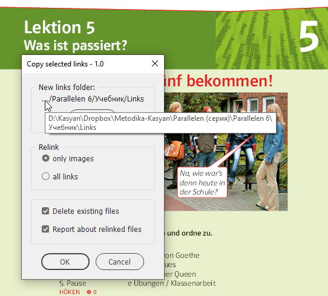
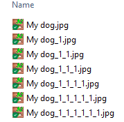
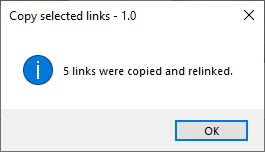

Copy selected links
A script for coping and relinking selected links to a new location. Written and tested in InDesign 2022 for Windows.

The idea to write this script stroke me when I was working on a textbook. Most of the materials are used from older textbooks and previous editions. I usually open an old book, copy the necessary stuff and paste it into the new book. But the problem is that links point to the original location. All files — both old and new — are located on DropBox: on the same drive. If I leave copied links as they are, I can spoil files in the archives in case I need to edit them. Finding, copying and relinking images manually one by one is a time-consuming process.
This is a set of two scripts. First, the user runs the Set parameters script to select a new links folder to copy links and, if necessary, other settings; then, in InDesign, he/she selects the linked images and/or text, Excel, etc. files, and runs the Copy selected links script.
Technical details
The script uses the link’s copyLink method that copies and relinks a linked file in one go. Unlike the core JavaScript file’s copy method, it keeps intact the original creation and modification dates.
Parameters
In the dialog box, you can choose which type of links to copy and relink: only images or all links (including InCopy files, linked text files, and Excel tables).
Delete existing files
If this check box is on and the file with the same name already exists in the destination folder, the file is deleted before copying (imitating overwriting) it. Otherwise, copying the same file several times gives strange results for some file types. For example, On Windows 10, when coping a JPG file, InDesign always adds the _1 suffix to the base name, like so:

Report about relinked files.
If this check box is on, the script displays a pop-up at the end reporting how many files were processed.

The current version copies only images placed into ‘simple’ containers like rectangles, ovals, etc. It doesn’t work with images selected with the Direct Selection Tool (white arrow). I'm working on the new version which handles such and other more complex situations.
If you found this script useful and want me to develop it further, consider supporting me by donating via PayPal directly to my e-mail: askoldich [at] yahoo [dot] com. (Due to PayPal's restrictions for Ukraine, I can't have a Donate button on my site.)
Click here to download the script.